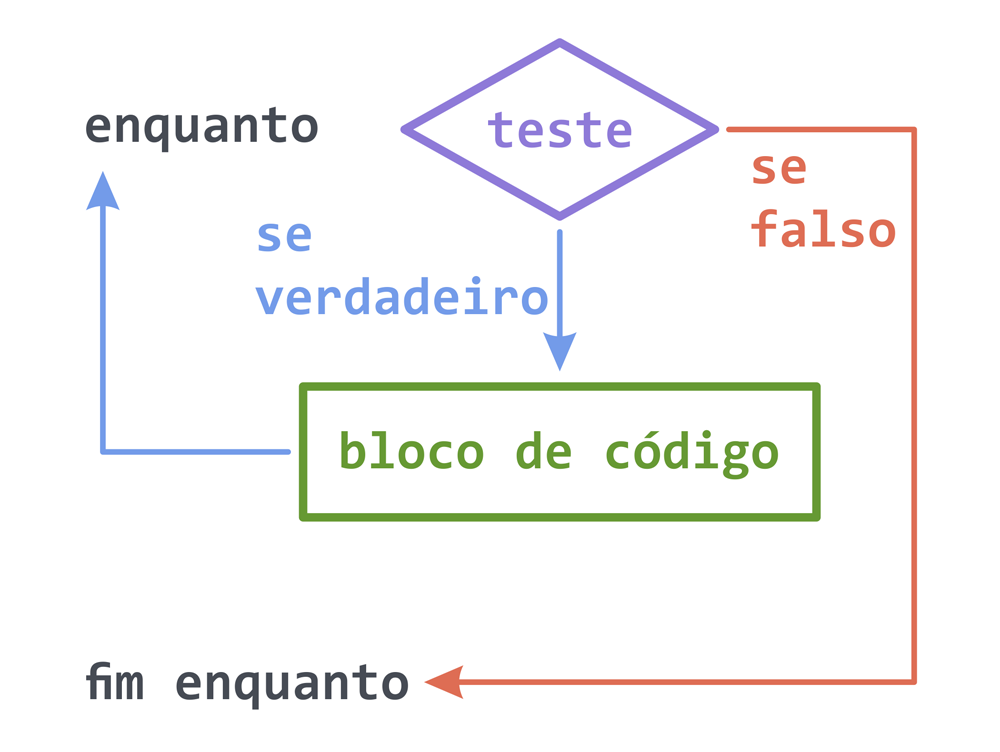
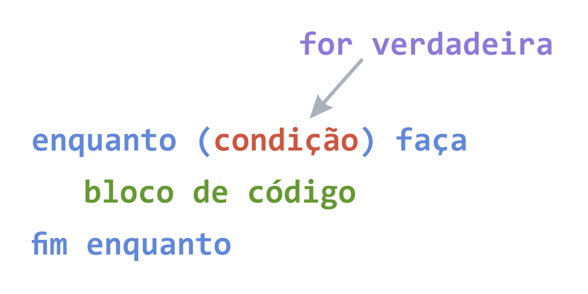
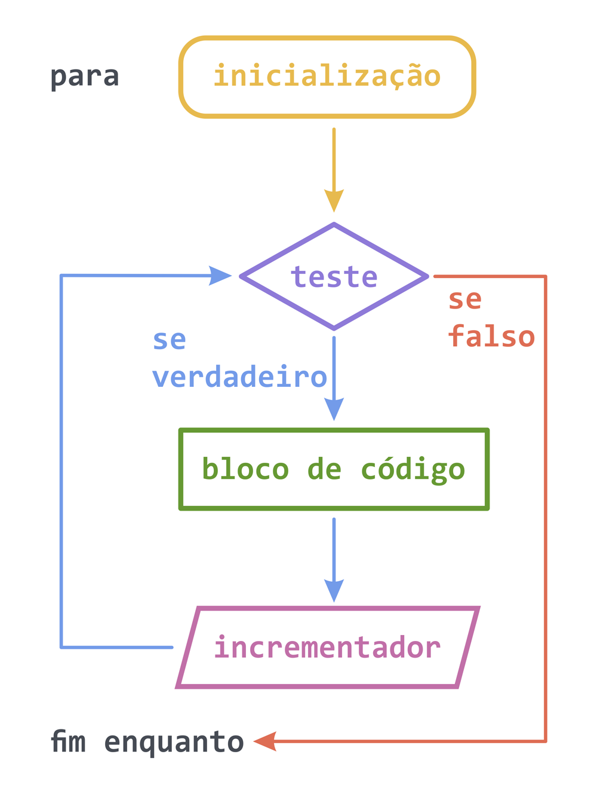
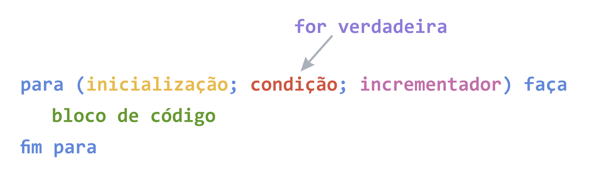

A estrutura (ou laço) de repetição while tem 2 partes:
Enquanto o teste (condição) for verdadeiro, entra no bloco de código e volta a testar. Se o teste (condição) for falso, segue para a próxima linha de código.
Nota: Se houver um contador, este deve ser incrementado dentro do bloco de código do while.
A sintaxe (forma de escrever) é a seguinte:
Ex: 1.1. Enquanto o valor for menor que 5, mostre o valor na tela.
1.2. Receba um valor e enquanto o contador for menor que o valor informado, mostre o contador na tela.
A estrutura (ou laço) de repetição for tem 4 partes:
Nota: O contador pode ser incrementado dentro do bloco de código ou da estrutura do for.
A sintaxe (forma de escrever) é a seguinte:
Ex: 2.1. Enquanto o valor for menor que 5, mostre o valor na tela.
2.2. Receba um valor e enquanto o contador for menor que o valor informado, mostre o contador na tela.
3.1. Algoritmo para verificar se um número é Par ou Ímpar
3.2. Escreva um algoritmo que receba 5 números inteiros. Se o número informado for par, multiplique. Se o número informado for ímpar, some.
Mostre o resultado de todos os pares multiplicados. Mostre o resultado de todos os ímpares somados.